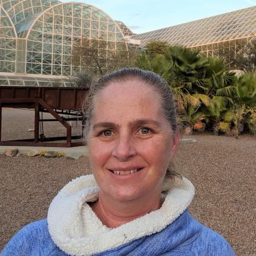
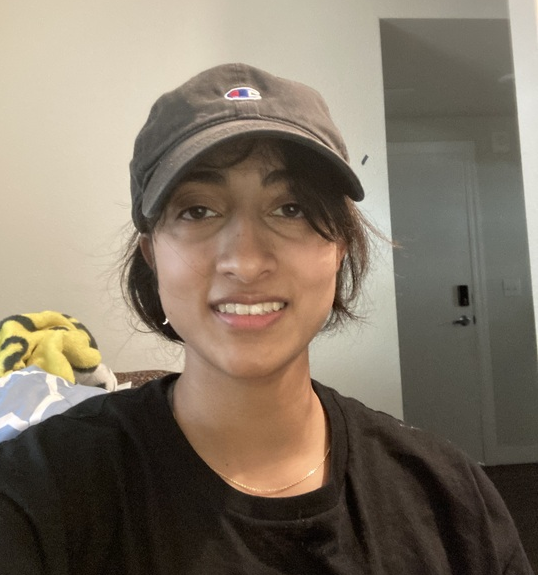
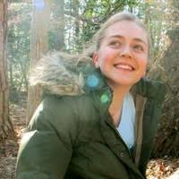
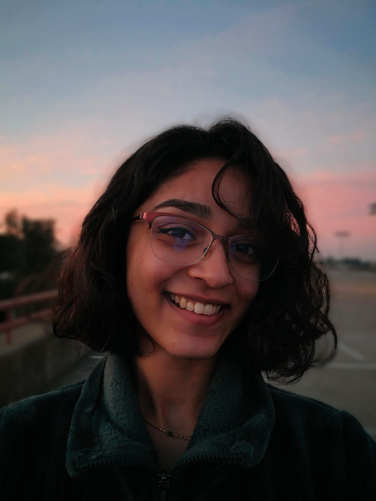
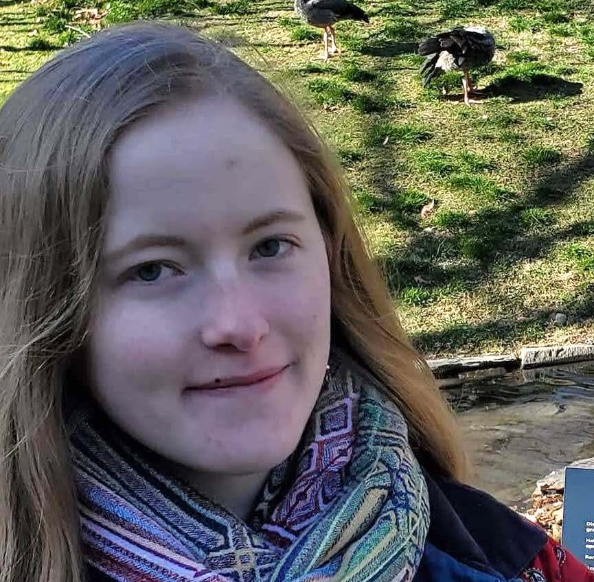
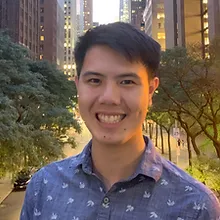
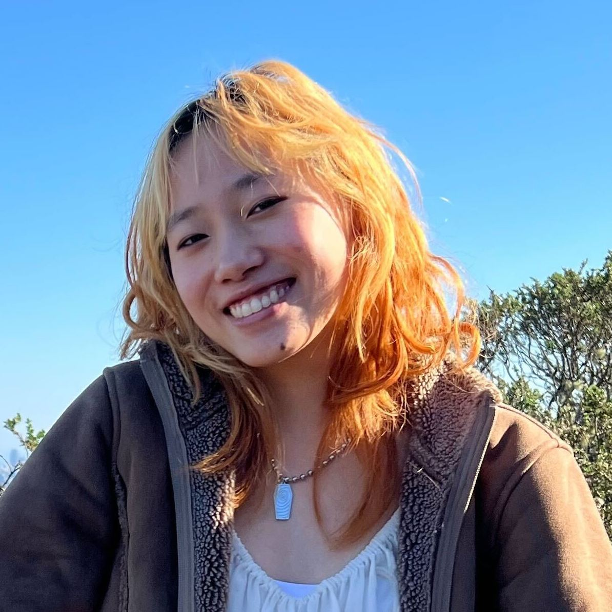
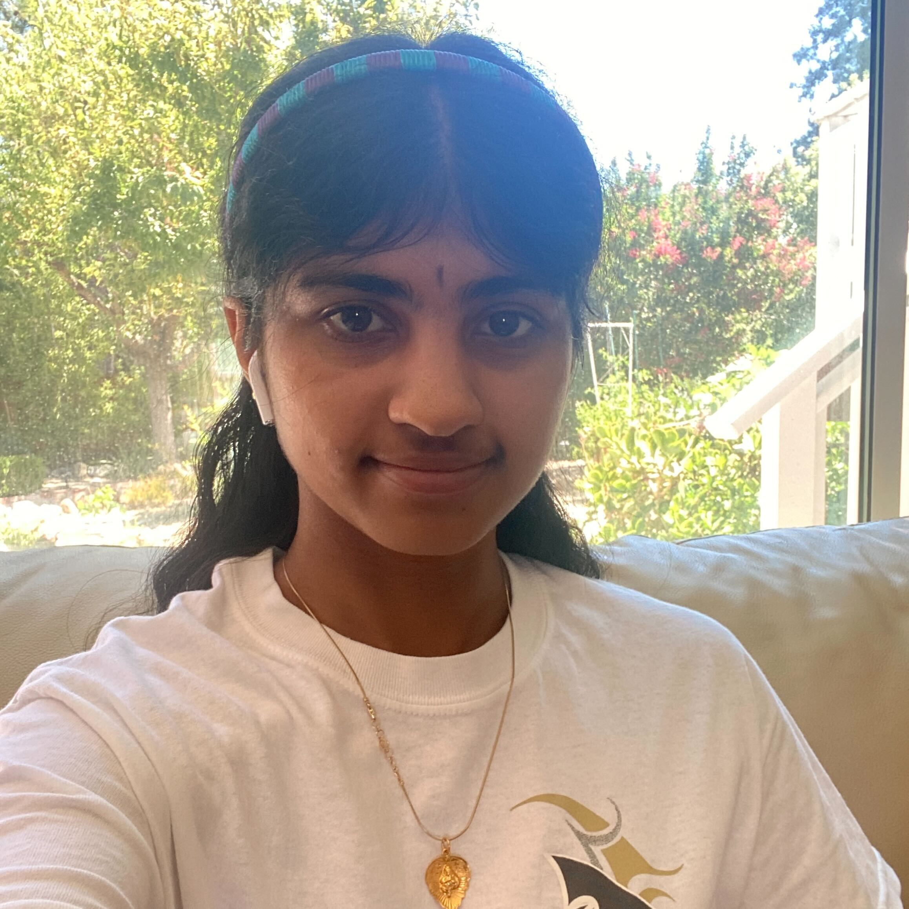
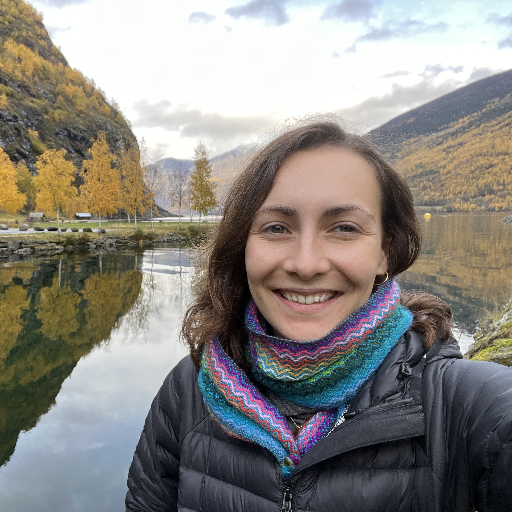
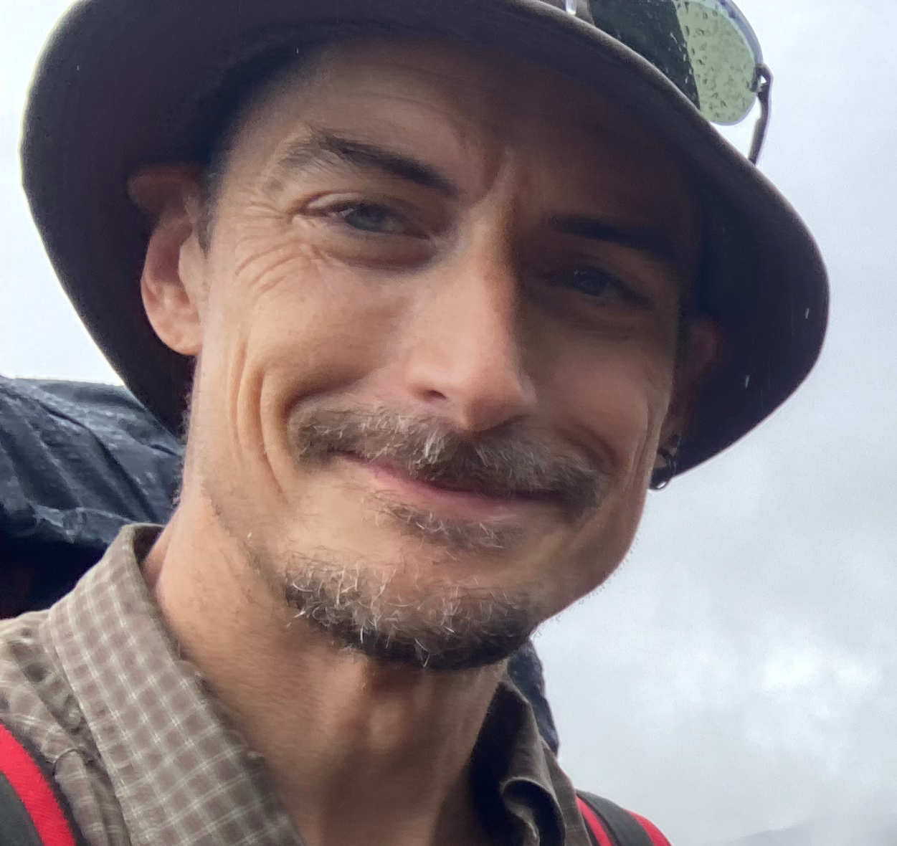

People
Current R-I Lab members
Please read more information on joining the lab and lab expectations.

Brenda Cameron
(she/her)
Brenda is the lab manager and czar. In addition to working with us, she manages the Bay, Grosberg and Stachowicz labs as well, and is an award-winning lab safety expert.

Vibha Chandrasekar

(they/she)
Vibha is a biochemistry major interested in computational biology. They are currently working under Natasha Dhamrait to understand the evolution of transposable elements in the maize genome.

Elli Cryan

(she/her)
Elli is a Plant Biology graduate student coadvised by Dan Kliebenstein, working on the evolution of gene networks and the evolution of cross-incompatibility loci.

Natasha Dhamrait

(she/her)
Natasha is a student in the Population Biology graduate group with interests including plant evolution, domestication, genome biology, and transposable elements.

Regina Fairbanks

(they/them)
Regina is a student in the Population Biology graduate group, currently working on the population genetics and archaeology of the maize domestication locus tga1.

Forrest Li


(he/him)
Forrest is a graduate student in Integrative Genetics and Genomics working on climate adaptation in maize as part of a large international collaboration led by CIMMYT. He is coadvised by Dan Runcie.

Hana Lubin
(they/them)
Hana is a sophomore interested in plant ecology and genetics. They are currently working with Regina Fairbanks to update our list of genes targeted by selection during maize domestication.

Sowmya Mambakkam
(she/her)
Sowmya is a sophomore Genetics and Genomics major investigating the population genetics of inversions in Zea and convergent adaptation in perennials grasses.

Alyssa Phillips

(she/her)
Alyssa is a Plant Biology graduate student working on the origins of polyploidy and environmental adaptation in big blue stem as part of the PanAnd project.
Garnet Phinney
(she/her)
Garnet is a Genetics and Genomics major working to understand the evolution and genomic variability of cross-incompatibility loci in maize and teosinte.

Jeff is a Professor in the Department of Evolution and Ecology
and a faculty member of the Center for
Population Biology and the Genome Center.
Ayelet Salman-Minkov
(she/her)
Ayelet is a project scientist working in collaboration with Dan Runcie and CIMMYT to understand how genotype-environment association approaches can be used for crop breeding.
Lab Alumni
- Sarah Odell PhD student 2016-2023
- Edwin Solares Postdoc 2021-2023 (Lecturer, UC Davis)
- Miriam Nancy Salazar Vidal Postdoc 2016-2022 (Postdoc, U Missourri)
- Mitra Menon Postdoc 2020-2022 (Computational Biologist, Form Bio)
- Julianna Porter Postbac, 2021-2022 (Junior Specialist, UC Davis)
- Luke Sparreo Summer REU, 2022
- Asher Hudson PhD student, 2017-2022 (Postdoc, USDA NC State)
- Catherine Rushworth Postdoc 2018-2022 (Asst. Prof, Utah State)
- Silas Tittes: Postdoc 2018-2022 (Research Scientist, U Oregon)
- Robert Horvath: Postdoc 2020-2021 (Postdoc, U. Zurich)
- Ning Yang: Postdoc 2019-2021 (Professor, Huazhong Ag. University)
- Daniel Gates: Postdoc 2016-2020 (Bioinformatician, Checkerspot)
- Taylor Perkins: Lab Manager 2019-2020
- Sarah Turner-Hissong: Postdoc 2019-2020 (Research Scientist, Bayer Crop Sci.)
- Michelle Stitzter PhD student 2013-2019 (NSF Postdoc, Cornell)
- Dianne Velasco PhD Student 2010-2019 (USDA-ARS National Clonal Germplasm Repository)
- Li Wang: Postdoc 2018-2019 (Research Scientist, Agricultural Genomics Institute Shenzhen)
- Markus Stetter: Postdoc 2017-2019 (Asst. Group Leader, U. Köln)
- Wenbin Mei: Postdoc 2016-2018 (Scientist at Inari Agriculture)
- Anne Lorant: Lab manager, PhD student, postdoc 2013-2018 (Bioinformatician, LBMCC)
- Emily Josephs: Postdoc 2015-2018 (Asst. Professor, MSU)
- Luis Avila: Programmer 2016-2018 (Research Scientist, Genentech)
- Anna O’Brien: PhD Student 2011-2017 (Postdoc, U. Toronto)
- Jinliang Yang: Postdoc 2014-2017 (Assistant Professor, U. Nebraska)
- Josh Hough: Postdoc 2016-2017
- Paul Bilinski: PhD Student 2010-2016 (Associate Professor, West Shore Community College)
- Simon Renny-Byfield: Postdoc 2014-2016 (Research Scientist, Corteva Agriscience)
- Kate Crosby: Postdoc 2014-2015 (Research Scientist, Indigo Ag)
- Sayuri Tsukahara: Postdoc 2013-2015
- Tim Beissinger: Postdoc 2014-2015 (Professor, U. Göttingen)
- Arun Durvasula: Undergraduate 2013-2015 (PhD Student, UCLA)
- Nivaz Brar: Undergraduate 2014-2015
- Chris Fiscus: Undergraduate 2014 (PhD Student, UC Riverside)
- Tyler Kent: Undergraduate 2013-2015 (PhD Student, U. Toronto)
- Vince Buffalo: Programmer 2013-2014 (Postdoc, U Oregon)
- Sofiane Mezmouk: Postdoc 2012-2014 (Research Scientist, KWS)
- Shohei Takuno: Postdoc 2012-2013 (Asst. Professor, SOKENDAI)
- Matthew Hufford: Postdoc 2010-2013 (Assoc. Professor, Iowa State)
- Tanja Pyhäjärvi: Postdoc 2010-2012 (Associate Professor, U. Helsinki)
- Joost van Heerwaarden: Postdoc 2009-2011 (Researcher, U. Wageningen)
Visiting Scholar: for >100 hours of scholastic visitation
Fellow of the R-I Lab: for >500 hours of scholastic fellowship
Current Collaborators
Genetic diversity in maize and teosinte
Evolution of Incompatibility Loci in Maize and Teosinte
Quantitative Genetics of Genotype x Environment Interaction
Evolutionary Genetics of Transposable Elements
Convergent Evolution in the Andropogoneae
Evolutionary genetics of highland adaptation in maize